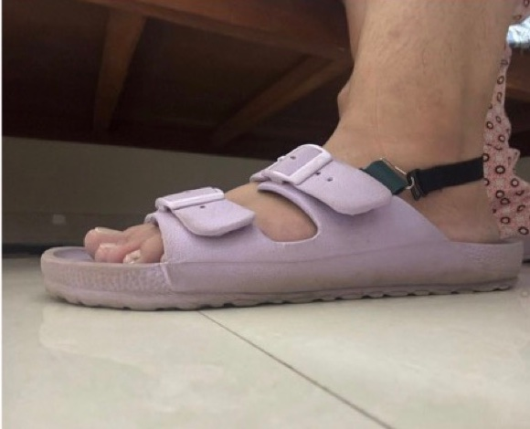

Beyond the Fitting • 2026
Why so few women reach prosthetic care in India, and what still stops them once they're fitted.
The gap
Out of about fifty people a day at BMVSS Jaipur Foot, we saw two or three women.
Insight
A service being available isn't the same as it being accessible. And a prosthesis that works can still not fit a woman's life.
Design intent
Bring care closer to women, and let the prosthesis fit their culture, clothes and footwear.
Outcome
A community-linked service model, the 3D-printed Chappal Lock, and a research paper submitted to IndiaHCI 2026.
